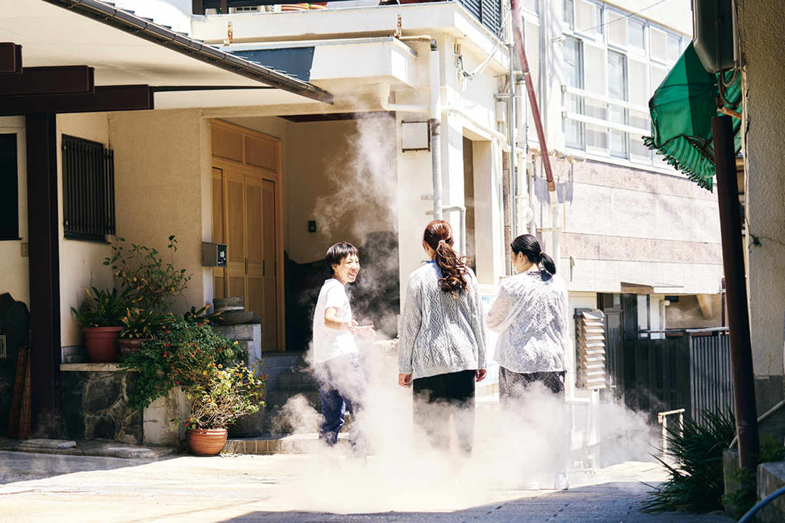
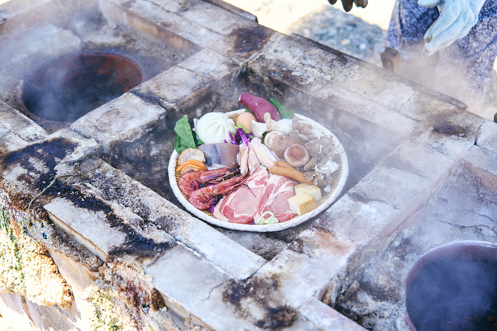
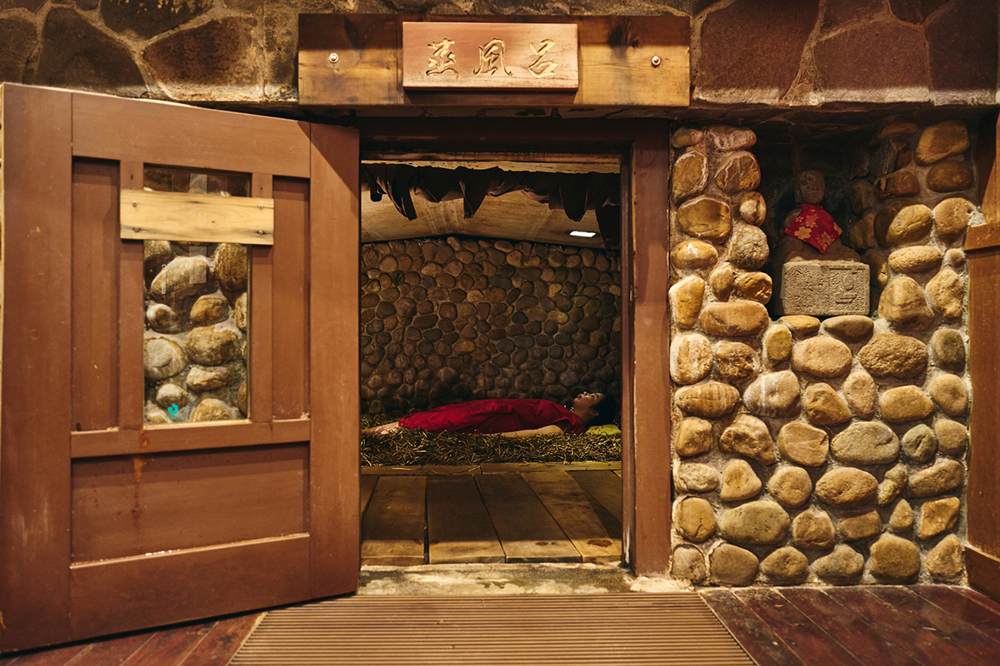
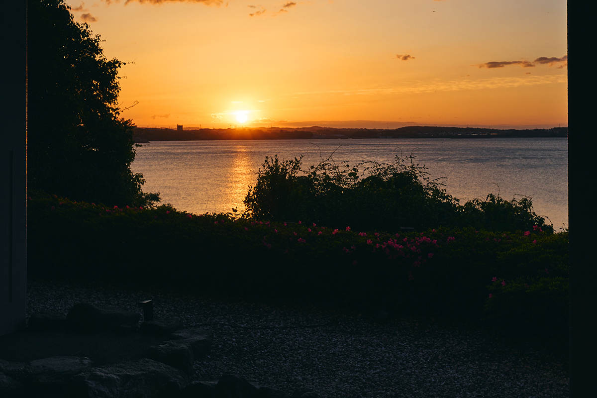

Префектура Оита · Беппу, Хидзи · отель и онсэны
Grand Mercure Beppu Bay: пар Каннавы с проводником и рассвет над заливом Беппу

Отель Grand Mercure стоит в стороне от шумных курортов Беппу, на берегу залива. Его главная идея: показать гостю не открыточный Беппу, а повседневную жизнь горячих источников, и для этого здесь есть проводник из местных.
Идея
«Мусуби-бито»: проводник, который знает место изнутри
Grand Mercure это гостиничный бренд французской группы Accor. В мире у него больше 70 отелей, а в 2024 году в Японии открылись сразу 12. Девиз бренда «Proudly Local», то есть «гордость за своё место», и отели выбирают соответственно: не центр города и не главные туристические улицы, а места, где местные традиции до сих пор живут в обычном быту.
В самой сети это сравнивают с японским домом. Знаменитые курорты похожи на «омоя», главный дом усадьбы, а отели Grand Mercure на «ханарэ», отдельный флигель в глубине сада. Отсюда и название путешествия, которое предлагает бренд: «ханарэ-таби», поездка во флигель.
Чтобы гость не просто жил в стороне от толпы, а понял, где оказался, отели приглашают «мусуби-бито», буквально «связующих людей». Это местные жители, которые хорошо знают историю и культуру своего края и водят небольшие группы туда, куда сам турист вряд ли дойдёт.
Беппу
Каннава: «ады» и пар над крышами
Grand Mercure Beppu Bay Resort & Spa стоит в городке Хидзи, по соседству с Беппу, на берегу залива. Его программа «Мусуби-бито» ведёт в Каннаву, один из восьми старых курортных районов Беппу, которые вместе называют Беппу-хатто. Каннава издавна известна как место тодзи, долгого лечения горячими водами.
Проводница по Каннаве называет себя «охотницей за источниками» и родом из Беппу. Вместе с ней гуляют по самым глубинным уголкам квартала, слушают историю района и рассказ о том, от чего помогают здешние воды, и видят, как горячие источники встроены в жизнь местных жителей. Пар здесь вырывается из земли прямо между домами, а «адами», дзигоку, в Беппу называют самые бурные и горячие источники.

Обед в программе тоже связан с источниками. Дзигоку-муси, «адская парилка», это способ готовить еду на горячем пару и кипятке, которые бьют из-под земли. Этим способом пользуются ещё с эпохи Эдо, и на прогулке его пробуют за обедом.

Ещё одна часть прогулки это муси-ю, паровая баня. Пол небольшой каменной камеры покрыт лечебными травами, а нагревает её пар из источника. В тепле и запахе трав расслабляется и тело, и голова.
Программа идёт около 150 минут. В 2025 году участие стоило 13 650 иен с человека, если едут двое, и 10 900 иен с человека для группы из трёх или четырёх. Записываться нужно не позже чем за семь дней, дети младше 12 лет не участвуют.
«Мусуби-бито»: Каннава с «охотницей за источниками»
- Даты
- по запросу, кроме отдельных дней, уточнять заранее
- Часы работы
- 10:30–14:30 (около 150 минут)
- Цены / Вход
- 13 650 иен с человека для двоих, 10 900 иен с человека для группы от трёх; от 2 до 4 участников, с 12 лет, бронь не позже чем за 7 дней
- Телефон
- +81 3-5539-2606 (бронирование)
Отель
Онсэн с видом на залив и всё включено
После прогулки по Каннаве можно не искать баню: источник есть прямо в отеле. Горячая вода поднимается на его территории, и открытая купальня смотрит на залив Беппу, который лежит прямо внизу. Солнце встаёт из-за залива, поэтому ради утренней ванны стоит проснуться пораньше.

Номера оформлены в спокойных тонах, а их дизайн во всех отелях Grand Mercure вдохновлён природой и ремёслами своего края. После купания гостей ждёт «онсэн-лаунж», лаунж для отдыха после бани: здесь можно сколько угодно пить уксусные напитки и амадзакэ, сладкий рисовый напиток.
Завтрак и ужин подают в формате шведского стола, японская и европейская кухня рядом. В каждом отеле сети свой набор местных продуктов: в меню есть региональные блюда в новой обработке и «монака-суши», суши в хрустящей вафельной оболочке, начинку для которых подбирают по месту. Еда, напитки в лаунже и всё остальное входят в стоимость проживания. В 2025 году ночь с ужином и завтраком стоила от 24 000 иен с человека при двухместном размещении, с налогами и сервисным сбором.
Grand Mercure Beppu Bay Resort & Spa
- Адрес
- префектура Оита, уезд Хаями, Хидзи, Хирамити, Ириэ, 1825
- Телефон
- +81 3-5539-2606 (бронирование)
- Номера
- 289
- Цены / Вход
- от 24 000 иен с человека с ужином и завтраком при двухместном размещении, налоги и сервисный сбор включены, всё включено
- Заезд / выезд
- 15:00 / 11:00
- Как добраться
- около 30 минут на машине или на автобусе от аэропорта Оита